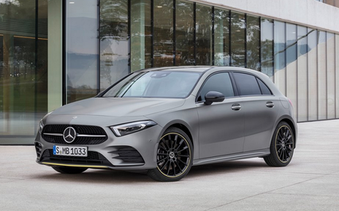
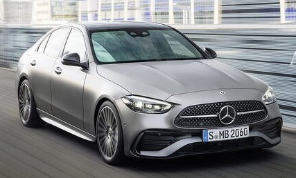
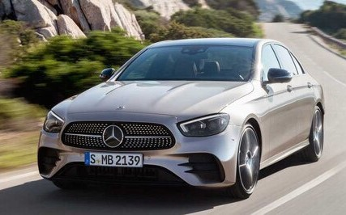
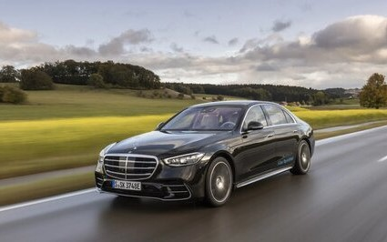

|  |
The A-CLASS
- The Mercedes-Benz A-Class is a subcompact luxury car that has been
in production since 1997.
- It is Mercedes-Benz's entry-level model
and is available as a hatchback, sedan, and sedan-based crossover.
|
|  |
The C-CLASS
- The Mercedes-Benz C-Class is a compact luxury car that has been in
production since 1993.
- It is one of Mercedes' core model lines and
is available as a sedan, coupe, cabriolet, and wagon.
|
|  |
The E-CLASS
- The Mercedes-Benz E-Class is a mid-size luxury car that has been in
production since 1953.
- It is one of Mercedes' most iconic and
best-selling model lines, available as a sedan, coupe, cabriolet,
and wagon.
|
|  |
The S-CLASS
- The Mercedes-Benz S-Class is the brand's flagship full-size luxury
sedan that has been in production since 1972.
- It is widely regarded
as one of the most prestigious, technologically advanced, and
well-engineered cars in the world.
|